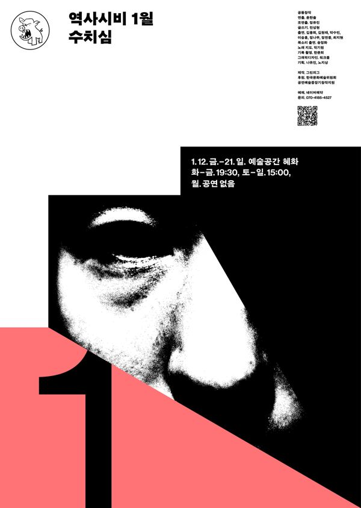

공동창작, 전성현 글쓰기, 윤한솔 연출

역사시비프로젝트: 승자의 관점을 거부하고 우리의 관점으로 역사를 다시 쓰는 3개년 프로젝트. 2024년 한 해 동안 매달 한 편씩, 1년 전 같은 달에 있었던 사건을 출발점으로 삼아 공연을 올렸다. 1월. 역사는 우리의 몸이 세계와 만나는 순간의 기록이고, 명사가 아닌 동사로 이해되어야 한다. 역사 속에서 수치심은 가해자가 아닌 생존자와 피해자의 몫이 되곤 한다. 그 수치심의 상황들을 기록한다.
2024.1.12–21 / 예술공간 혜화 - 역사시비프로젝트 1월
2024.3.22 관람 후기 (〈진짜연극-불멸의 이기석〉 함께)
2024.1.29 관람 후기
2024.1.26 관람 후기
이전: 〈악몽 또한 당신을 들여다본다〉 | 다음: 〈진짜연극-불멸의 이기석〉
아카이브로 돌아가기